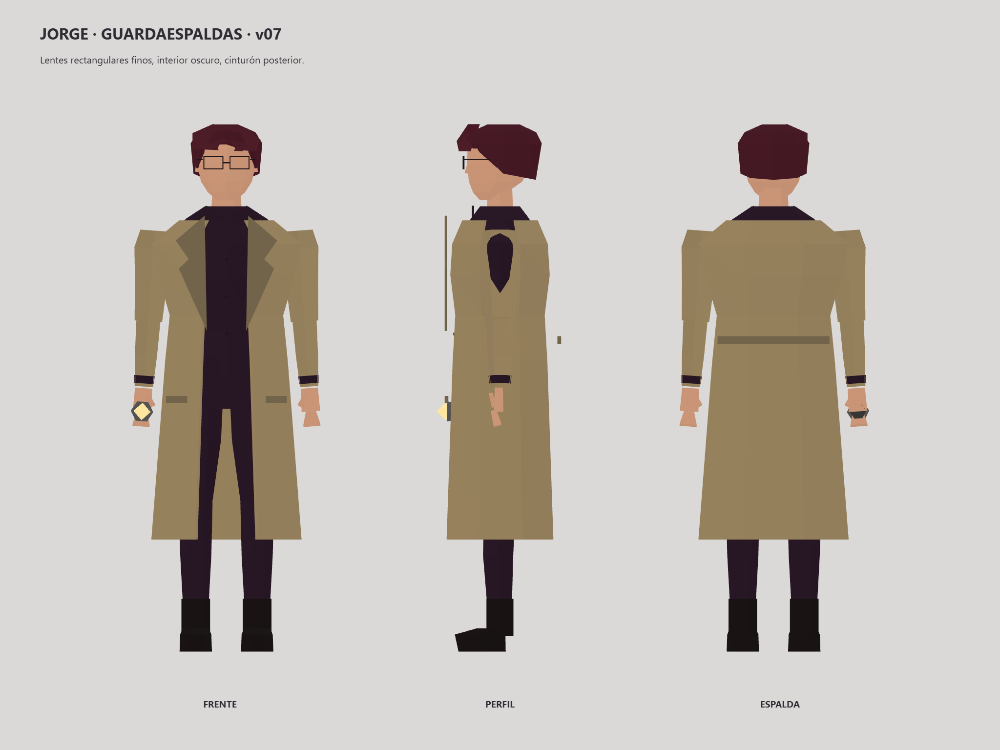
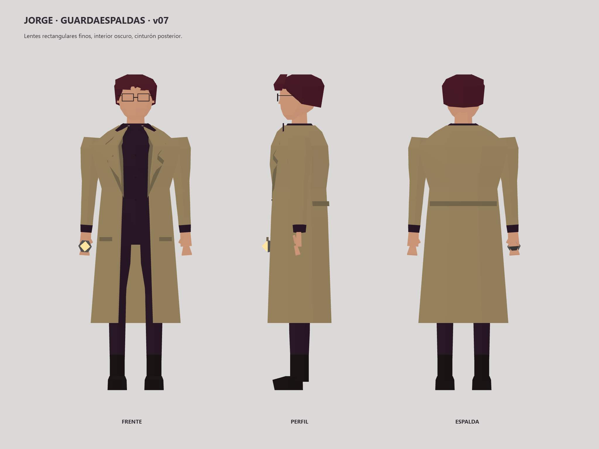
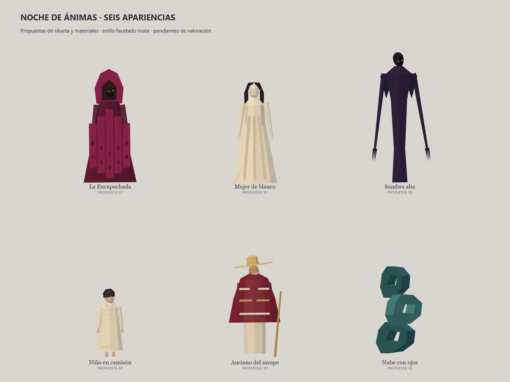

Noche de Ánimas · dirección de arte · 19 noviembre 2026
Reparar la base.
Dar identidad a la casona.
Elenco estilizado inspirado en Ashen, arquitectura mexicana y terror legible en tiempo real. Esta entrega reúne la reparación publicada de los personajes, seis propuestas de ánimas y un plan verificable para mejorar todos los gráficos.
13personajes reparados
717mallas auditadas
43 680fotogramas de prueba
28zonas capturadas
Personajes · reparación publicada
GitHub y Pages actualizadosSe cerraron las uniones de mangas y pantalones, se corrigieron las sisas y el ajuste del abrigo y se repararon orientaciones de caras y triángulos defectuosos. Las articulaciones y el contrato de animación se conservaron.

Antes
ReparadoLa prueba inspeccionó casi 297 millones de posiciones de vértices en 14 animaciones y combinaciones. No detectó coordenadas inválidas ni separación en las costuras continuas. La revisión topológica no encontró bordes físicos abiertos, caras invertidas en piezas cerradas o aristas no manifold. Las superficies abiertas de pintura/mechas son deliberadas. Nuevas animaciones o proporciones deben repetir estas pruebas.
Ánimas · propuestas para valorar
Se conservan las seis apariencias y sus familias de color. El cambio explora silueta, capas y espacio negativo; no modifica evidencias, reglas o identidades mecánicas. Se pueden comparar con las actuales y revisar reposo, cacería y desvanecimiento.

El orden de trabajo
Recomendación inmediata: terminar un recorrido corto —Zaguán, Patio/Corredor y Capilla— con el nivel visual final. Validar ahí materiales, escala, luz y rendimiento antes de extender el kit al resto de la casona.
Vino · #5A0F1EHueso · #F3E6CFPetróleo · #23565CCempasúchil · #E0782AÍndigo · #1A1430
Acabado común: facetas, aristas limpias, espesores reales y colores sólidos. Los personajes mantienen la dirección aprobada. Motivos de azulejo y papel picado mediante formas grandes; ilustraciones aprobadas se reservan para cartas, retratos y elementos de interfaz.
Inventario por habitación
Las imágenes son capturas de la versión actual, desde puntos transitables y con la luz del cuarto encendida. El texto describe la mejora propuesta; no son capturas de una casona ya remodelada.
Medir mientras se mejora
Capturas por software, no benchmark de FPS. Los contadores corresponden al pase principal renderizado en cada posición; las cámaras de pantallas y otros pases necesitan medición adicional. La iluminación y resolución se controlaron para comparar las zonas.
Conservar los lotes por piso ya existentes y comparar una partición por zonas para ocultar habitaciones fuera de vista. Reutilizar geometrías y materiales estáticos, manteniendo independientes los materiales de personajes y fenómenos. Controlar transparencias, cantidad de sombras y frecuencia de cámaras de vigilancia.
Validar las metas en un escritorio y un móvil concretos. Mantener un perfil de baja resolución y sombras reducidas; una escena más adornada debe seguir dejando visibles rutas, apagadores, herramientas y evidencias.